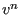
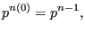

Next: Conservation of momentum (compressible Up: The Finite Volume Method Previous: Gamma Method Contents
The fields to be determined (velocity, pressure, temperature, turbulent
kinetic energy....) will be obtained by solving the conservation laws
(conservation of mass, of momentum...) in their transient form. Steady state
solutions are obtained by continuing a transient calculation up to a point at
which the solution does not significantly change any more. Stepping forward in
time is done by fluid time increments, the increment number will be denoted by
a superscript, e.g. . The actual time increment for which the solution is
to be found will be assumed to be  . If no increment superscript is used in
a variable,
. If no increment superscript is used in
a variable,  is assumed. In order to get the solution at the end of
increment
is assumed. In order to get the solution at the end of
increment  , iterations
, iterations  have to be performed. To denote the
solution at the end of iteration m a superscript in parenthesis
have to be performed. To denote the
solution at the end of iteration m a superscript in parenthesis  will be
used. If no such superscript is used for a variable the convergent solution is
meant. Consequently, at the beginning of a new increment
will be
used. If no such superscript is used for a variable the convergent solution is
meant. Consequently, at the beginning of a new increment  we have
we have
|  | (528) |
which means that the convergent solution at the end of increment  is taken
as starting solution for increment
is taken
as starting solution for increment  .
.